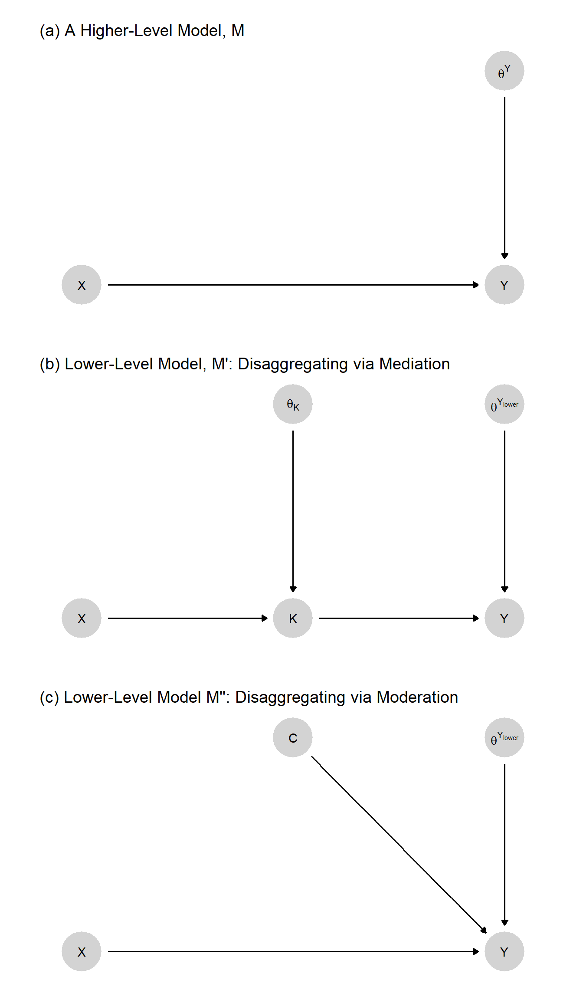
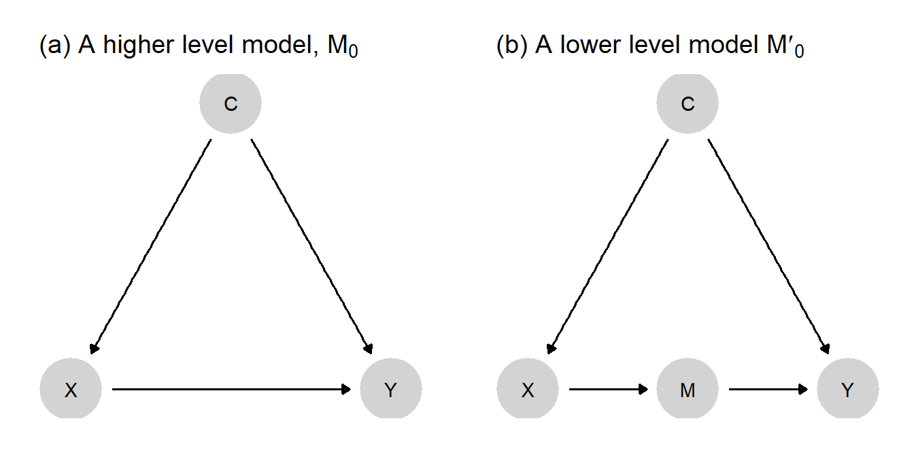
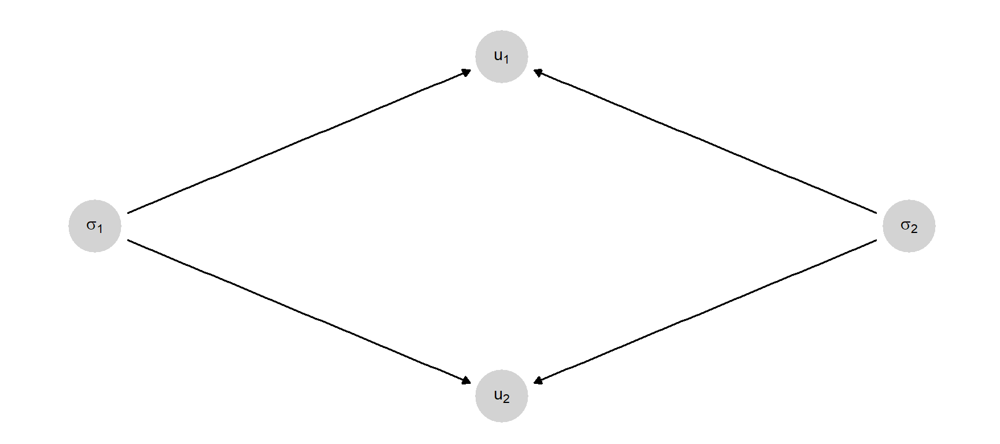
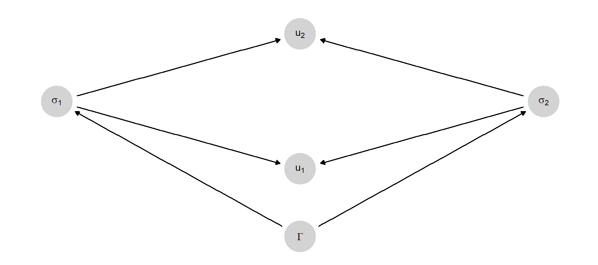
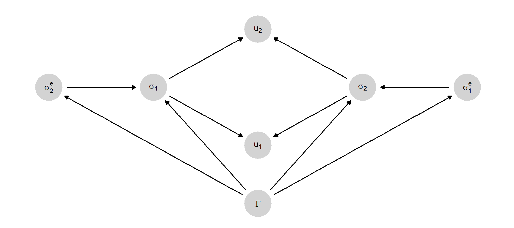
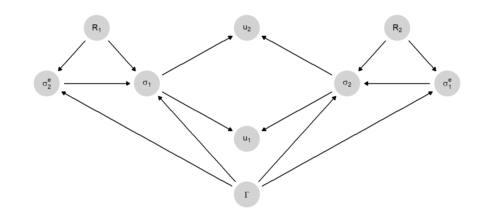
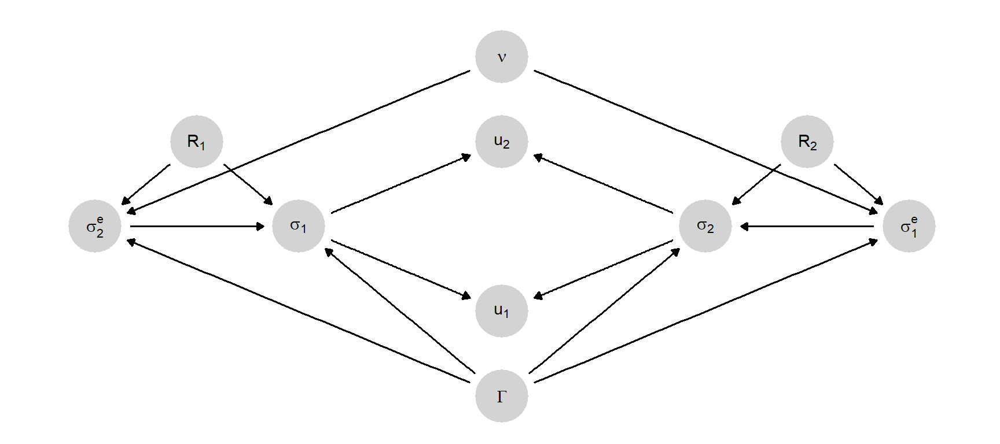

6 Theories as Causal Models
Chapter summary
We embed the notion of a “theory” into the causal-models framework. We describe a conceptual hierarchy in which a theory is a “lower level” model that explains or justifies a “higher level” model. The approach has implications for the logical consistency of our inferences and for assessing when and how theory is useful for strengthening causal claims.
In Chapter 3, we described a set of theories and represented them as causal models. But so far we haven’t been very explicit about what we mean by a theory or how theory maps onto a causal-model framework.
In this book, we will think of theory as a type of explanation: A theory provides an account of how or under what conditions a set of causal relationships operate. We generally express both a theory and the claims being theorized as causal models: A theory is a model that implies another model—possibly with the help of some data.
To fix ideas: a simple claim might be that “A caused B in case \(j\)”. This claim is itself a model, albeit a very simple one. The theory that supports this model might, for instance, be of any of the following forms:
- “A always causes B”
- “A always causes B whenever C, and C holds in case j”, or
- “A invariably causes M and invariably M causes B”.
All of these theories have in common that they are arguments that could be provided to support the simple claim that A causes B is a particular case. In each case, if you believe the theory, you believe the implication.
We can also think about theoretical implications in probabilistic terms. Suppose that we start with a simple claim of the form “A likely caused B in case \(j\).” That probabilistic simple claim could follow from a theory that reflected uncertainty about causal processes, such as: “A usually causes B or”A always causes B whenever C, and C probably holds in case j.”1
The rest of this chapter builds out this logic and uses it to provide a way of characterizing when a theory is useful or not.
In the first section, we consider multiple senses in which one model might imply, and thus serve as a theory of, another model.
First, we consider how one causal structure can imply (serve as a theory of) another causal structure, by including additional detail that explains how or when causal effects in the other model will unfold. If structural model \(A\) implies structural model \(B\), then \(A\) is a theory of \(B\).
We then turn to logical relations between probabilistic models. We show how the distributions over nodal types in a simpler model structure can be underwritten by distributions over nodal types in a more detailed model structure. Here, a claim about the prevalence (or probability) of causal effects in a causal network is justified by claims about the prevalence or probability of causal effects in a more granular rendering of that causal network.
Finally, we show how a probabilistic model plus data can provide a theoretical underpinning for a new, stronger model. The new model is again implied by another model, together with data.
In the second section, we consider how models-as-theories-of can be useful. In embedding theorization within the world of causal models, we ultimately have an empirical objective in mind. In our framework, theorizing a causal relationship of interest means elaborating our causal beliefs about the world in greater detail. As we show in later chapters, theorizing in the form of specifying underlying causal models allows us to generate research designs: to identify sources of inferential leverage and to explicitly and systematically link observations of components of a causal system to the causal questions we seek to answer. In this chapter, we point to ways in which the usefulness of theories can be assessed.
In the chapter’s third and final section, we discuss the connection between the kinds of theories we focus on—what might be called empirical theories—and analytic theories of the kind developed for instance by formal theorists. Moving from one to the other requires a translation and we illustrate how this might be done by showing how we can generate a causal model from a game-theoretic model.
6.1 Models as Theories Of
Let us say that a causal model, \(M^\prime\), is a theory of \(M\) if \(M\) is implied by \(M^\prime\). It is a theory because it has implications. Otherwise, it is a conclusion, an inference, or a claim.
A theory, \(M^\prime\), might itself sit atop—be supported by—another theory, \(M^{\prime\prime}\), that implies \(M^\prime\). To help fix the idea of theory as “supporting” or “underlying” the model(s) it theorizes, we refer to the theory, \(M^\prime\), as a lower-level model relative to \(M\) and refer to \(M\) as a higher-level model relative to its theorization, \(M^\prime\).2
Both structural models and probabilistic models—possibly in combination with data—imply other models.
6.1.1 Implications of Structural Causal
A structural model can imply multiple other simpler structural models. Similarly, a structural model can be implied by multiple more complex models.
Theorization often involves a refinement of causal types, implemented through the addition of nodes. Take the very simple model, \(M\), represented in Figure 6.1(a). The model simply states that \(X\) has (or can have) a causal effect on \(Y\).
What theories might justify \(M\)? This question can be rephrased as “what models imply model \(M\)?” The figure points to two possibilities. Both models \(M^\prime\) and \(M^{\prime\prime}\) imply model \(M\). They can be thought of as theories, or lower level models, of \(M\).
Model \(M^\prime\) differs from \(M\) by the addition of a node, \(K\), in the causal chain between \(X\) and \(Y\). We can say that \(M^\prime\) is a theory of \(M\) for two reasons. First, it provides a justification—if you believe \(M^\prime\) you should believe \(M\). If \(X\) affects \(Y\) through \(K\), then \(X\) affects \(Y\). But as well as a justification, it also provides an explanation of \(M\). Suppose we already know that \(X\) affects \(Y\) but want to know why. If we ask, “Why does \(X\) affect \(Y\)?”, \(M^\prime\) provides an answer: \(X\) affects \(Y\) because \(X\) affects \(K\), and \(K\) affects \(Y\).
Model \(M^{\prime\prime}\) differs from \(M\) by the addition of a node, \(C\), that moderates the effect of \(X\) on \(Y\). \(M^{\prime\prime}\) justifies \(M\) in the sense that, if you believe \(M^{\prime\prime}\), you should believe \(M\). \(M^{\prime\prime}\) provides an explanation of a kind also: If you believe model \(M^{\prime\prime}\), then you likely believe that the relation between \(X\) and \(Y\) is what it is because of \(C\)’s value. Had \(C\) been different, the causal relation between \(X\) and \(Y\) might have also been different.
Both of these models imply \(M\) but themselves constitute stronger—that is, more specific—claims about the world than does \(M\). For instance, \(M^\prime\) stipulates not only that \(X\) can affect \(Y\) but that such an effect must operate via \(K\). For this reason, the two theories should be harder to accept than \(M\)—and so may themselves need to be defended, or theorized, by even lower level models.
Importantly, both \(M^\prime\) and \(M^{\prime\prime}\) involve a redefinition of \(\theta^Y\) relative to model \(M\). We see a change in the endogenous nodes as we go down a level (the addition of \(K\) or \(C\)) —and these changes, in turn, imply a change in the interpretation of the exogenous, \(\theta\) nodes pointing into existing endogenous nodes (such as \(Y\) in this example).
As we move down a level, we can think of a part of \(\theta^Y\) as being splintered off and captured by a new component of the more detailed model. Consider, for instance, the move from \(M\) down to \(M^\prime\). In moving from the higher- to the lower level model, we have effectively split the nodal-type term \(\theta^Y\) into two parts: \(\theta^{Y_\text{lower}}\) and \(\theta^K\). Intuitively, in the higher level model, \(M\), \(Y\) is a function of \(X\) and \(\theta^Y\), the latter representing all things other than \(X\) than can affect \(Y\). Or, in the language of our nodal-type setup, \(\theta^Y\) represents all of the (unspecified) sources of variation in \(X\)’s effect on \(Y\). When we insert \(K\) into the model, however, \(X\) now does not directly affect \(Y\) but only does so via \(K\). Further, we model \(X\) as acting on \(K\) in a manner conditioned by \(\theta^K\); and \(\theta^K\) represents all of the unspecified factors determining \(X\)’s effect on \(K\). The key thing to notice here is that \(\theta^K\) now represents a portion of the variance that \(\theta^Y\) represented in the higher level graph: Some of the variation in \(X\)’s effect on \(Y\) now arises from variation in \(X\)’s effect on \(K\), which is captured by \(\theta^K\).
So, for instance, \(X\) might have no effect on \(Y\) because \(\theta^K\) takes on the value \(\theta^K_{00}\), meaning that \(X\) has no effect on \(K\). Put differently, any effect of \(X\) on \(Y\) must arise from an effect of \(X\) on \(K\); so \(\theta^K\)’s value must be either \(\theta^K_{01}\) or \(\theta^K_{10}\) for \(X\) to affect \(Y\). 3 What \(\theta^K\) represents, then, is that part of the original \(\theta^Y\) that arose from some force other than \(X\) operating at the first step of the causal chain from \(X\) to \(Y\). So now, \(\theta^Y\) in the lower level graph is not quite the same entity as it was in the higher level graph. In the original graph, \(\theta^Y\) represented all sources of variation in \(X\)’s effect on \(Y\). In the lower level model, with \(K\) as a mediator, \(\theta^Y\) represents only the variation in \(K\)’s effect on \(Y\). In the move from model \(M\) down to model \(M^\prime\), \(\theta^Y\) has been expunged of any factors shaping the first stage of the causal process, which now reside in \(\theta^K\). We highlight this change in \(\theta^Y\)’s meaning by referring in the second model to \(\theta^{Y_\text{lower}}\).
Consider next model \(M^{\prime\prime}\) in Figure 6.1, which also supports (implies) the higher level model, \(M\). The logical relationship between models \(M\) and \(M^{\prime\prime}\), however, is somewhat different. Here the lower level model specifies one of the conditions that determined the value of \(\theta^Y\) in the higher level model. In specifying a moderator, \(C\), we have extracted \(C\) from \(\theta^Y\), leaving \(\theta^{Y_\text{lower}}\) to represent all factors other than \(C\) that condition \(Y\)’s response to its parents. More precisely, \(\theta^{Y_\text{lower}}\) now represents the set of nodal types defining how \(Y\) responds jointly to \(X\) and \(C\). Again, the relabeling as \(\theta^{Y_\text{lower}}\) reflects this change in the term’s meaning. Whereas in Model \(M^{\prime}\) we have extracted \(\theta^K\) from \(\theta^Y\), in Model \(M^{\prime\prime}\), it is \(C\) itself that we have extracted from \(\theta^Y\), specifying as a substantive variable what had been just a random disturbance.
6.1.2 Probabilistic Models Implied by Lower Level Probabilistic Models
We used Figure 6.1 to show how one structural model can be implied by another. In the same way, one probabilistic model can be implied by another. If a higher level probabilistic model is to be implied by a lower level probabilistic model, consistency requires that the probability distributions over exogenous nodes for the higher level model are those that are implied by the distributions over the exogenous nodes in the lower level model.
To illustrate, let us add a distribution over \(\theta^K\) and \(\theta^Y_{\text{lower}}\) to the structural model \(M^\prime\) in Figure 6.1(b). This gives us a probabilistic causal model. We will call this model \(M^p_\text{lower}\). \(M^p_\text{lower}\), in turn, implies a higher level probabilistic model, \(M^p_\text{higher}\): \(M^p_\text{higher}\) is formed from the structure of Model (a) in Figure 6.1 together with a particular distribution over \(\theta^Y\). Specifically, \(\theta^Y\) must have the distribution that preserves the causal relations implied by the probabilistic beliefs in \(M^p_\text{lower}\).
Recall that \(\lambda\) represents population-shares over causal types, and thus a probability distribution over \(\theta\). So for instance the probability that \(\theta^{Y}_{00}\) is simply \(\lambda^{Y}_{00}\). So we have:
In \(M^p{_\text{higher}}\), the probability that \(X\) has a positive effect on \(Y\) is \(\lambda^{Y}_{01}\).
In \(M^p_{\text{lower}}\), the probability that \(X\) has a positive effect on \(Y\) is \(\lambda^{K_{\text{lower}}}_{01}\lambda^{Y_{\text{lower}}}_{01} + \lambda^{K_{\text{lower}}}_{10}\lambda^{Y_{\text{lower}}}_{10}\). That is, it is the probability that we have a chain of linked positive effects plus the probability that we have a chain of linked negative effects—the two ways in which we can get a positive total effect of \(X\) on \(Y\) in this model.
Consistency then requires a particular equality between the distributions (\(\lambda\)s) at the two levels. Specifically, it requires that \(\lambda^{Y_{\text{higher}}}_{01} = \lambda^{M_{\text{lower}}}_{01}\lambda^{Y_{\text{lower}}}_{01} + \lambda^{K_{\text{lower}}}_{10}\lambda^{Y_{\text{lower}}}_{10}\). So the value of \(\lambda^{Y_{\text{higher}}}_{01}\) is implied by \(\lambda^{K_{\text{lower}}}_{01},\lambda^{Y_{\text{lower}}}_{01}, \lambda^{K_{\text{lower}}}_{10},\lambda^{Y_{\text{lower}}}_{10}\).
In other words, the probability of a positive \(X \rightarrow Y\) effect must be the same in \(M^p_\text{higher}\) as it is in \(M^p_\text{lower}\). Otherwise, \(M^p_\text{higher}\) cannot be implied by \(M^p_\text{lower}\), and the latter cannot serve as a theory of the former.
While the probability distributions in a lower level model must imply the probability distributions in the higher level model that it supports, the converse may not be true: Knowing the distribution over exogenous nodes of a higher level model does not provide sufficient information to recover distributions over exogenous nodes in the lower level model. So, for instance, knowing \(\lambda^{Y_{\text{higher}}}\) does not give us enough information to determine the values of \(\lambda^{Y_{\text{lower}}}\) and \(\lambda^{K_{\text{lower}}}\). This is because there are many different combinations of \(\lambda^{K_{\text{lower}}}_{01}, \lambda^{Y_{\text{lower}}}_{01}, \lambda^{K_{\text{lower}}}_{10}\), and \(\lambda^{Y_{\text{lower}}}_{10}\) that will add up to any given value for \(\lambda^{Y_{\text{higher}}}\).
6.1.3 Models Justified by Theory and Data
Finally, we can think of a higher level model as being supported by a lower level model combined with data. For this reason, we can fruitfully think of an initial model—when coupled with data—as constituting a theory of an updated model.
To see how this might work, imagine a scholar arguing: “\(M_1\): \(X\) caused \(Y\) in country \(j\).” When pushed for a justification for the claim, they provide the lower level model: “\(M_0:\) \(X\) causes \(Y\) if and only if \(C=1\). Further, in this case, \(C=1\) and so \(X\) caused \(Y\) in this case.”
Here \(M_1\) is implied by \(M_0\) plus data \(C=1\).
We can take this further. If pushed now as to why \(M_0\) is itself credible, the scholar might point to an even lower level model consisting of structural relations \(X\rightarrow Y \leftarrow C\) plus flat priors over all nodal types—coupled with data on \(X,Y\) and \(C\), where the data justify the higher level belief about \(C\)’s moderation of \(X\)’s effect on \(Y\).
As further justifications are sought, researchers seek acceptable lower models that, together with data, can justify higher level models. Note that, as we move down levels in this hierarchy of models, we may be—helpfully—moving from models that are harder to accept down to models that are easier to accept, because we are bringing data to bear. So, in the above example, it should be easier to accept \(X\rightarrow Y \leftarrow C\) with flat priors than to accept the claim that “\(X\) causes \(Y\) if and only if \(C=1\).” But the former works to justify the latter because we join it up with the data on \(X,Y\) and \(C\).
6.2 Gains from Theory
We now turn to consider how to think about whether a theory is useful. We are comfortable with the idea that theories, or models more generally, are wrong. Models are not full and faithful reflections of reality; they are maps designed for a particular purpose. We make use of them because we think that they help in some way.
But how do they actually help, and can we quantify the gains we get from using them?
We think we can.
6.2.1 Illustration: Gains from a Front-Door Theory
Here is an illustration with a theory that allows the use of the “front-door criterion” (Pearl 2009). The key idea is that by invoking a theory for a model—which itself may require justification—one can draw inferences that would not have been possible without the theory.
Imagine we have a structural causal model \(M_0\): \(C \rightarrow X \rightarrow Y \leftarrow C\), as depicted in panel (a) of Figure 6.2. Here, \(C\) is a confound for the relationship between \(X\) and \(Y\). Say we have data on three variables, \(X\), \(Y\), and \(K\) (a node that is not included in \(M_0\)). So we have data for two of the nodes in \(M_0\) plus additional data on \(K\), but we do not have data on \(C\).
Now let’s form a probabilistic causal model, \(M^p_0\), by adding flat priors to \(M_0\). Joining the \(X\) and \(Y\) data to probabilistic model \(M^p_0\), we can then generate an updated model, \(M^p_1\), with a probability distribution that reflects our learning from the data. Suppose that the data here display a strong correlation between \(X\) and \(Y\). What kind of beliefs will \(M^p_1\) contain? From \(M^p_1\), we would consider a causal connection between \(X\) and \(Y\) to be plausible—but quite uncertain. This uncertainty arises because we are aware that the correlation we see may be due to the unobserved confound \(C\), and we currently have no leverage for distinguishing between a causal effect and confounding.
Suppose, however, that we now posit the lower level structural model \(M'_0\): \(C \rightarrow X \rightarrow K \rightarrow Y \leftarrow C\), as depicted in panel (b) of Figure 6.2. \(M'_0\) implies \(M_0\) in the structural sense discussed in Section 6.1.1.
\(M'_0\) makes a stronger claim than \(M_0\): \(M'_0\) presupposes a specific pathway between \(X\) and \(Y\) that \(M_0\) does not. Critically, however, if we accept \(M'_0\), then we can make use of our data on node, \(K\), which was impossible when working with \(M_0\).
Specifically, we can now:
- turn \(M'_0\) into a probabilistic model \(M'^p_0\);
- use data on \(X\), \(Y\), and \(K\) to move to an updated version, \(M'^{p}_1\); notably, data on the mediator \(K\) may help us sort out whether the \(X, Y\) correlation is causal or a consequence of confounding;
- pose our causal question to \(M'^{p}_1\), which has been informed by data on \(K\).
This perhaps all seems a bit convoluted, so it is fair to ask: what are the gains? This depends on the data we observe, of course. If we observe, for instance, that \(X\) and \(K\) are strongly correlated and that \(K\) and \(Y\) are strongly correlated, then beliefs in \(M'^{p}_1\) will reflect confidence that, in fact, \(X\) does cause \(Y\)—whereas with \(M^{p}_1\) we were very uncertain.
Thus, in return for specifying a theory of \(M_0\), we may be able to make better use of data and form a more confident conclusion.
In other situations, we might imagine invoking a theory that does not necessarily involve new data, but that allows us to make different, perhaps tighter inferences using the same data. An example might be the invocation of theory that involves a monotonicity restriction or exclusion restriction that allows for the identification of a quantity that would not be identifiable without the theory.

Thus, one reason to theorize our models—develop lower level models that make stronger claims—is to be able to reap greater inferential leverage from the more elaborated theory when we go to the data.
6.2.2 Quantifying gains
Can we quantify how much better off we are?
We need some evaluation criterion—some notion of “better off”—to answer this question. Two of the more intuitive criteria might be based on:
- Error: An error-based evaluation asks whether the theory helped reduce the (absolute) difference between an estimate and a target; similarly, we might focus on squared error—which essentially places more weight on bigger errors
- Uncertainty: We might instead assess gains in terms of reduced uncertainty. We might measure uncertainty using the variance of our beliefs, or we might use relative entropy to assess reductions in uncertainty
Other criteria (or loss functions) might focus on other features. For instance, we might ask whether the data we see are explained by the theory in the sense that they are more likely—less surprising—given the theory. Or we might want a criterion that takes account of the costs of collecting additional data or to the risks associated with false conclusions. For instance, in Heckerman, Horvitz, and Nathwani (1991), an objective function is generated using expected utility gains from diagnoses generated from new information over diagnoses based on what is believed already.
Beyond specifying a criterion, we also can approach any criterion from a “subjective” or an “objective” position. Are we concerned with how uncertain we will be as researchers, or do we seek to benchmark our inferences against the true state of the world?
We can, further, distinguish between evaluation from an ex ante or an ex post perspective. Are we evaluating how we expect to do under a given theory before we have seen the data, or how we have done after we have drawn our inferences? Table 6.1 shows how these two dimensions might be crossed to generate four different approaches to evaluating learning.
| Ex ante | Ex post | |
|---|---|---|
| Subjective | Expected posterior variance | Posterior variance, Change in beliefs, Wisdom |
| Objective | Expected mean squared error | Error, squared error |
So, for instance, in the top left quadrant (subjective/ex ante), we are interested in how uncertain we expect to be if we work with a given theory; in the bottom left quadrant (objective/ex ante), we are asking how far off we expect to be from some ground truth. In the second column, we are asking how uncertain we are about an inference we have made (subjective/ex post), or about how far off we have ended up from a ground truth (objective/ex post).
We now use this \(2\times2\) structure to walk through possible metrics for gains from theory, focusing on a situation in which a theory lets us use additional data \(K\) to make inferences. Thus, when we speak of the gains from the theory, we mean the gains that come from the use of \(K\) in the ways made possible by the theory.
In this setup, we imagine that there is an unknown parameter, \(q\in\{0,1\}\), and we are interested in the value of \(q\) for a single unit drawn from some population. We have beliefs about the distribution of \(K\), given \(q\). Let \(p(q,k)\) denote the joint distribution over \(q\) and \(k\) with marginal distributions \(p(k)\) and \(p(q)\). Let \(p(q|k)\) denote a researcher’s posterior given \(k\), which we abbreviate to \(\hat{q}_k\).
For the illustrations that follow, imagine that we start with a (subjective) prior that \(q=1\) of \(p=0.2\). And so our prior expectation for \(q\) is \(\hat{q}_0 = p = 0.2\). We’ll assume that that belief is correct, in the sense that q=1 for one fifth of units in the population.
Now, we have a theory under which we believe that \(p(k=1|q = 1) = .8\) and that \(p(k=1|q = 0) = .2\). Importantly, we will imagine that these two beliefs are incorrect, however: that, in fact, \(p(k=1|q = 1) = p(k=1|q = 0) = .5\). Our theory, then, is wrong. We think \(K\) is informative, but in fact it is not. This difference between what our theory tells us and what the truth is will allow us to illustrate different conceptualizations of learning.
The key features of this example are summarized in Table 6.2. Each row here (or “event”) represents a different situation we might end up in: A different combination of what the true answer to our query is (\(q\) is 0 or 1) and of what we observe when we examine \(K\) (\(k=1\) or \(k=0\)). All four rows are ex ante possible.
Say, now, that we in fact observe \(k=1\) and update to \(q_1 = p(q=1|k=1) = \frac{p(k=1|q=1)p(q=1)}{p(k=1|q=1)p(q=1) + p(k=1|q=0)p(q=0)} = \frac{0.8 \times 0.2}{0.8 \times 0.2 + 0.2 \times 0.8} = 0.5\). Suppose, however, that, unbeknownst to us, in reality \(q=0\). So we are in fact in row 2 of this table (\(q=0, k=1\)). But since we cannot observe \(q\), we do not know whether we are in row 2, where \(q=0\), or row 4, where \(q=1\).
Let’s now think about different ways of characterizing the gains from observing \(K\), the piece of evidence made usable by our theory.
Warning in kableExtra::column_spec(kabble(theorygains, col.names = c("$q$
(Unobserved)", : Please specify format in kable. kableExtra can customize
either HTML or LaTeX outputs. See https://haozhu233.github.io/kableExtra/ for
details.Warning in kableExtra::column_spec(kableExtra::column_spec(kabble(theorygains,
: Please specify format in kable. kableExtra can customize either HTML or LaTeX
outputs. See https://haozhu233.github.io/kableExtra/ for details.Warning in
kableExtra::column_spec(kableExtra::column_spec(kableExtra::column_spec(kabble(theorygains,
: Please specify format in kable. kableExtra can customize either HTML or LaTeX
outputs. See https://haozhu233.github.io/kableExtra/ for details.Warning in
kableExtra::column_spec(kableExtra::column_spec(kableExtra::column_spec(kableExtra::column_spec(kabble(theorygains,
: Please specify format in kable. kableExtra can customize either HTML or LaTeX
outputs. See https://haozhu233.github.io/kableExtra/ for details.Warning in
kableExtra::column_spec(kableExtra::column_spec(kableExtra::column_spec(kableExtra::column_spec(kableExtra::column_spec(kabble(theorygains,
: Please specify format in kable. kableExtra can customize either HTML or LaTeX
outputs. See https://haozhu233.github.io/kableExtra/ for details.Warning in
kableExtra::column_spec(kableExtra::column_spec(kableExtra::column_spec(kableExtra::column_spec(kableExtra::column_spec(kableExtra::column_spec(kabble(theorygains,
: Please specify format in kable. kableExtra can customize either HTML or LaTeX
outputs. See https://haozhu233.github.io/kableExtra/ for details.Warning in
kableExtra::column_spec(kableExtra::column_spec(kableExtra::column_spec(kableExtra::column_spec(kableExtra::column_spec(kableExtra::column_spec(kableExtra::column_spec(kabble(theorygains,
: Please specify format in kable. kableExtra can customize either HTML or LaTeX
outputs. See https://haozhu233.github.io/kableExtra/ for details.Warning in
kable_styling(kableExtra::column_spec(kableExtra::column_spec(kableExtra::column_spec(kableExtra::column_spec(kableExtra::column_spec(kableExtra::column_spec(kableExtra::column_spec(kabble(theorygains,
: Please specify format in kable. kableExtra can customize either HTML or LaTeX
outputs. See https://haozhu233.github.io/kableExtra/ for details.| \(q\) (Unobserved) | \(k\) (Observable) | Event probability (subjective) | Event probability (objective) | Inference on \(q\) given \(k\) | Actual (squared) Error | Posterior variance |
|---|---|---|---|---|---|---|
| 0 | 0 | 0.64 | 0.4 | 0.059 | 0.003 | 0.055 |
| 0 | 1 | 0.16 | 0.4 | 0.500 | 0.250 | 0.250 |
| 1 | 0 | 0.04 | 0.1 | 0.059 | 0.886 | 0.055 |
| 1 | 1 | 0.16 | 0.1 | 0.500 | 0.250 | 0.250 |
6.2.2.1 Objective, ex post
If we are willing to posit an external ground truth, then we can define “better” in objective terms. For instance, we might calculate the size of the error (or, more typically, the squared error) we make in our conclusions relative to the ground truth. We can then compare the error we make when we use the theory (and the clue that that theory makes usable) to draw an inference to the error that we make when we draw an inference without the aid of the theory (and its associated clue).
The difference in squared errors is given by \((q - \hat{q}_k)^2 - (q - \hat{q}_0)^2\).
In the numeric example, our objective ex post (squared) error is \((0-.5)^2 = 0.25\) (using \(K\)), which compares unfavorably to our prior error \((0-0.2)^2 = .04\) (without using \(K\)). Objectively, after the fact, we are worse off basing inferences on \(K\) than we were before. Note that we move in the wrong direction here not only because our theory about the informativeness of the clue is incorrect, but also because in this instance the clue realization that we happen upon points us in the wrong direction.
6.2.2.2 Objective, ex ante
Rather than asking how wrong we are given the data pattern we happened to observe, we can ask how wrong we are expected to be when we go looking for a clue that our theory makes usable (we say “are expected to be” rather than “we expect to be” because the evaluation may be made using beliefs that differ from the beliefs we bring with us when we draw inferences). An objective ex ante approach would ask what the expected error is from the conclusions that we will draw given a theory. For instance: how wrong are we likely to be if we base our best guess on our posterior mean, given the observation of a clue that the theory lets us make use of? “How wrong” might again be operationalized in different ways: for instance, in terms of expected squared error—the square of the distance between the truth and the posterior mean.
The expected squared error (see also Section 5.1.6) is: \[\mathcal{L} := \int_q\int_k \left(\hat{q}_k-q\right)^2p(k, q)dkdq \]
This equation yields the error that one would expect to get with respect to any true value of the parameter (\(q\)), given the data one might see given \(q\) and the inferences one might draw. Note here that the joint distribution \(p(k,q)\) is the objective (unknown) distribution, whereas the posterior \(\hat{q}_k)\) is calculated using the researcher’s subjective beliefs. In principle, ex ante can be thought of with respect to the the new information \(k\) or also with respect to the actual estimand \(q\); we will work with the latter.
Returning to the numeric example, we can calculate the expected (actual) squared error with respect to the objective event probabilities in Table 6.2. This yields here 0.215. This might be compared (unfavorably) to the expected error if we just used the prior (0.2) on \(q\), given the objective distribution of events. This would give expected (squared) error of 0.16.
We do badly in expectation not just because the theory is wrong, but because it is very wrong. We might have done better, and gained from the theory, in expectation, had the theory only been moderately wrong. To see this, imagine instead that in fact \(p(k=1|q = 1) = 0.7, p(k=1|q = 0) = 0.3\) and so the probabilities of the four events are \((0.56, 0.24, 0.06, 0.14)\). Then, although we are overestimating the probative value of \(k\), we are not wrong about \(k\) being informative. In this situation, where the theory is less wrong, our expected error would be 0.15—an improvement relative to our prior.
6.2.2.3 Subjective, ex post
The problem, of course, with an objective approach is that we do not have the information—the true values of our queries—that we need to calculate objective errors.
A more subjective approach involves asking about the reduction in posterior variance. Ex post we can define “better” as the reduction in posterior variance from drawing an inference that makes use of a theory and its associated clue compared to an inference that does not.
A problem with this measure, however, is that posterior variance is not guaranteed to go down: Our uncertainty can increase as we gather more data. Importantly, however, that increase in uncertainty would not mean that we have not been learning. Rather, we have learned that things are not as simple as we thought—so we become less certain than we were before, in a manner justified by what we have observed.
One approach that addresses this issue asks: How much better are our guesses having observed \(K\) compared to what we would have guessed before, given what we know having observed \(K\)? This question captures the idea that, although we might be more uncertain than we were before, we think we are better off now because we are less naive. We might call this kind of improvement wisdom to reflect the idea that it values appreciation of justifiable uncertainty:
\[\text{Wisdom} = \frac{\int\left((\hat{q}_0 - q)^2 - (\hat{q}_k - q)^2 \right)p(q | k)dq}{\int(\hat{q}_0 - q)^2 p(q)dq} = \frac{(\hat{q}_0 - \hat{q}_k)^2}{\hat{q}_0(1-\hat{q}_0)}\]
The numerator in this expression captures how much better off we are with the guess we have made given current data (\(\hat{q}_k\)) compared to the guess we would have made if we had a theory that did not let us make use of it (\(\hat{q}_0\)), all assessed knowing what we now know. This can be interpreted simply as the subjective reduction in error (squared). 4 The denominator is simply the prior variance and is included here for scaling.
Returning to the numeric example, our posterior variance after observing \(k=1\) is 0.25 compared to a prior variance of 0.16. So variance has increased. However, we have a gain in wisdom of \(\frac{0.09}{0.16}\), reflecting how much better we believe our beliefs are compared to how they were before.
6.2.2.4 Subjective, ex ante
Finally, we might think about the contributions to learning that we expect from a theory before observing the data. We can conceptualize expected learning as the reduction in expected posterior variance: How certain do we expect we will be after we make use of new information? (See also our discussion in Section 5.1.6.)
For any \(k\), we might write the posterior variance on \(\hat{q}_k\) given observation \(k\) as \(V(\hat{q}_k)\). Then, the expected posterior variance can be written:
\[EV := \int_k V(\hat{q}_k) p(k)dk\]
This equation takes the posterior variance, given some data, over all the possible data that one might encounter given distribution \(p(k)\). It is well known that whenever inferences are sensitive to the data, the expected posterior variance will be lower than the prior variance.5 Interestingly, it is also the case that, if we assess expectations using the same priors that we use for forming posteriors, the expected posterior variance and squared error are equivalent (Scharf 1991).^[To see this, we take advantage of the fact that \(p(q,k) = p(k)p(q|k) = p(q)p(k|q)\) and that \(p(q|k)\) gives the posterior distribution of \(q\) given \(k\). We then have: \[\begin{eqnarray} \mathcal{L} &=& \int_q\int_k \left(\hat{q}_k-q\right)^2p(q,k)dkdq \\ &=& \int_k\int_q \left(\hat{q}_k-q\right)^2p(k)p(q|k)dq dk \\ &=& \int_k\left[\int_q \left(\hat{q}_k-q\right)^2p(q|k)dq\right]p(k)dk \\ &=& \int_k V(\hat{q}_k) p(k)dk = EV \end{eqnarray}\]
The key move is in recognizing that \(p(q |k)\) is in fact the posterior distribution on \(q\) given \(k\). In using this, we assume that the same distribution is used for assessing error and for conducting analysis—that is we take the researcher’s prior to be the relevant one for assessing error.] Moreover, the reduction in expected posterior variance is also equal to expected wisdom.6
Returning to the numeric example in Table 6.2, the expected posterior variance (with expectations taken with respect to the subjective event probability distribution) is 0.118. Note that we would also get 0.118 if we took the expectation of the actual squared error with respect to subjective event probability distribution. The reduction in posterior variance over the prior variance of 0.16 is 26.47%.
We have described a set of possible metrics for gains from theory, but there is no single right metric. The right metric for assessing gains fundamentally depends on what the researcher values—whether that is making fewer errors, being confident in conclusions, avoiding overconfidence, or something else.
6.3 Formal Theories and Causal Models
It is relatively easy to see how the ideas above play out for what might be called empirical models. But in social sciences, “theory” is a term sometimes reserved for what might be called “analytic theories”. In this last section, we work through how to use this framework when seeking to bring analytic theories to data.
As an example of an analytic theory, we might consider the existence of “Nash equilibria.” Nash considered a class of settings (“normal form games”) in which each player \(i\) can choose an action \(\sigma_i\) from set \(\Sigma_i\) and receives a payoff \(u_i\) that depends on the actions of all players. A particular game, \(\Gamma\) is the collection of players, action sets, and payoffs.
Nash’s theorem relates to the existence of a collection of strategies with the property that each strategy would produce the greatest utility for each player, given the strategies of the other players. Such a collection of strategies is called a Nash equilibrium.
The claim that such a collection of strategies exists in these settings is an analytic claim. Unless there are errors in the derivation of the result, the claim is true in the sense that the conclusions follow from the assumptions. There is no evidence that we could go looking for in the world to assess the claim. The same can be said of the theoretical claims of many formal models in social sciences; they are theoretical conclusions of the if-then variety (Clarke and Primo 2012).
For this reason we will refer to theories of this form as “analytic theories.”
When researchers refer to a theory of populism or a theory of democratization however, they often do not have such analytic theories in mind. Rather they have in mind what might be called “applied theories” (or perhaps more simply “scientific theories” or “empirical theories”): general claims about the relations between objects in the world. The distinction here corresponds to the distinction in Peressini (1999) between “pure mathematical theories” and “mathematized scientific theories.”
Applied theory, in this sense, is a collection of claims with empirical content: An applied theory refers to a set of propositions regarding causal relations in the world that might or might not hold, and is susceptible to assessment using data. These theories might look formally a lot like analytic theories, but it is better to think of them as translations at most. The relations between nodes of an applied theory are a matter of conjecture, not a matter of necessity.7
Though it is not standard practice, formal models produced by game theorists can often be translated into applied theoretical analogs and then represented using the notation of structural causal models. Moreover, doing so may be fruitful. Using the approach described above, we can assess the utility of the applied theory, if not the analytic theory itself.
For two players, for instance, we might imagine a representation of a standard normal form game as shown in Figure 6.3.

The model includes all the primitives of a normal form game: We can read off the number of players, the strategy sets (the range of the strategy nodes) and the mapping from actions to utilities. Here the only causal functions are the utility functions. In an analytic theory, these functions are known. In an applied translation of the theory these are a matter of conjecture: The functions capture the researchers’ beliefs that actual actions will produce actual payoffs. So far the model does not capture any claims about behavior or expected behavior.
In contrast to Nash’s theorem regarding the existence of equilibria, a behavioral theory might claim that in problems that can be represented as normal form games, players indeed play Nash equilibrium. This is a theory about how people act in the world. We might call it Nash’s theory.
How might this theory be represented as a causal model? Figure 6.4 provides one representation.

Here, player beliefs about the game form (\(\Gamma\)) results in strategy choices by actors. If players play according to Nash’s theory, the causal functions for the strategy choices are given by the Nash equilibrium solution itself, with a refinement in case of multiplicity.
This model represents what we expect to happen in a game under Nash’s theory and we can indeed see if the relations between nodes in the world look like what we expect under the theory. The relations are nevertheless a matter of conjecture, to be contrasted with the exact claims on strategy profiles that are produced by an analytic theory that assumes Nash equilibria are played.
So far the model does not provide much of an explanation for behavior. A lower level causal model might help. In Figure Figure 6.5, the game form \(\Gamma\) determines the beliefs about what actions the other player would make (thus \(\sigma_2^e\) is 1’s belief about 2’s actions). The causal functions for \(\sigma_2^e\) and \(\sigma_1^e\) might, for instance, be the Nash equilibrium solution itself: that is, players expect other players to play according to the Nash equilibrium (or in the case of multiple equilibria, a particular equilibrium selected using some refinement). The beliefs, in turn, together with the game form (which contains \(u_1, u_2\)), are what cause the players to select a particular action. The causal function for \(\sigma_1\) might thus be \(\sigma_1 = \arg \max_\sigma u_1(\sigma, \sigma_2^e)\).

This representation implies a set of relations that can be compared against empirical patterns. Do players indeed hold these beliefs when playing a given game? Are actions indeed consistent with beliefs in ways specified by the theory? It provides a theory of beliefs and a theory of individual behavior as well as an explanation for social outcomes.
The model in Figure 6.5 provides a foundation of sorts for Nash’s theory. It suggests that players play Nash equilibria because they expect others to and they are utility maximizers. But this is not the only explanation that can be provided; alternatively behavior might line up with the theory without passing through beliefs at all, as suggested in some accounts from evolutionary game theory that show how processes might select for behavior that corresponds to Nash even if agents are unaware of the game they are playing.
One might step still further back and ask why would actors form these beliefs, or take these actions, and answer in terms of assumptions about actor rationality. Figure 6.6, for instance, is a model in which actor rationality might vary and might influence beliefs about the actions of others as well as reactions to those beliefs. Fully specified causal functions might specify not only how actors act when rational but also how they react when they are not. In this sense, the model in Figure 6.6 both nests Nash’s theory and provides an explanation for why actors conform to the predictions of the theory.

In a final elaboration, we can represent a kind of underspecification of Nash’s theory that makes it difficult to take the theory to data. In the above, we assume that players choose actions based on expectations that the other player would play the Nash equilibrium—or that the theory would specify which equilibrium in the case of multiplicity. But it is well known that Nash’s theory often does not provide a unique solution. This indeterminacy can be captured in the causal model as shown in Figure 6.7, where a common shock—labeled \(\nu\), and interpreted as norms—interacts with the game form to determine the expectations of other players.
The causal function for expectations can then allow for the possibility that (i) there is a particular equilibrium invariably chosen and played by both (ii) or a guarantee that players are playing one or other equilibrium together but uncertainty over which one is played, or (iii) the possibility that players are in fact out of sync, with each playing optimal strategies given beliefs but nevertheless not playing the same equilibria.
Nash’s theory likely corresponds to position (ii). It can be captured by causal functions on beliefs given \(\nu\) but the theory does not specify \(\nu\), in the same way that it does not specify \(\Gamma\).

We highlight three points from this discussion.
First, the discussion highlights that thinking of theory as causal models does not force a sharp move away from abstract analytic theories; close analogs of these can often be incorporated in the same framework. This is true even for equilibrium analysis that seems to involve a kind of simultaneity at first blush.
Second, the discussion highlights how the causal modeling framework can make demands for specificity from formal theories. For instance, specifying a functional relation from game form to actions requires a specification of a selection criterion in the event of multiple equilibria. Including agent rationality as a justification for the theory invites a specification for what would happen absent rationality.
Third, the example shows a way of building a bridge from pure theory to empirical claims. One can think of Nash’s theory as an entirely data-free set of claims. When translated into an applied theory—a set of propositions about the ways actual players might behave—and represented as a causal model, we are on a path to being able to use data to refine the theory. Thus, we might begin with a formal specification like that in Figure 6.7 but with initial uncertainty about player rationality, optimizing behavior, and equilibrium selection. This theory nests Nash but does not presume the theory to be a valid description of processes in the world. Combined with data, however, we shift to a more refined theory that might select Nash from the lower level model.
Finally, we can apply the ideas of Section 6.2 to formal theories and ask: Is the theory useful? For instance, does data on player rationality help us better understand the relationship between game structure and welfare?
The claim could also follow from a theory that reflected beliefs about heterogeneity of causal processes. For a review of rival approaches to scientific explanation see Woodward (2003).↩︎
We note that our definition of theory differs somewhat from that given in Pearl (2009) (p207): there a theory is a structural causal model and a restriction over the possible values of exogenous but not a probability distribution over these nodes. Our definition also considers probabilistic models as theories, allowing statements such as “the average effect of \(X\) on \(Y\) in some domain is 0.5.”↩︎
As we emphasize further below, it is in fact only the random, unknown component of the \(X\rightarrow K\) link that makes the addition of \(K\) potentially informative as a matter of research design: If \(K\) were a deterministic function of \(X\) only, then knowledge of \(X\) would provide full knowledge of \(K\), and nothing could be learned from observing \(K\).↩︎
The numerator simplifies according to: \[\begin{eqnarray*} \int\left((\hat{q}_0 - q)^2 - (\hat{q}_k - q)^2 \right)p(q | k)dq &=& \int\left(\hat{q}_0^2 - 2q\hat{q}_0 - \hat{q}_k^2 + 2q\hat{q}_k \right)p(q | k)dq\\ &=&\left(\hat{q}_0^2 - 2\hat{q}_k\hat{q}_0 - \hat{q}_k^2 + 2\hat{q}_k^2 \right)\\ &=& \left(\hat{q}_0- \hat{q}_k\right)^2 \end{eqnarray*}\] From this we see that the measure does not depend on either prior or posterior variance (except through the denominator). Note also that wisdom, though non negative, can exceed 1 in situations in which there is a radical re-evaluation of a prior theory, even if uncertainty rises. As an illustration, if our prior on some share is given by a \(\text{Beta}(2, 18)\) distribution, then our prior mean is .1, and our prior variance is very small, at 0.0043. If we observe another four positive cases, then our posterior mean becomes 1/4 and our posterior variance increases to 0.0075. We have shifted our beliefs upward and at the same time, become more uncertain. But we are also wiser since we are confident that our prior best guess of .1 is surely an underestimate. Our wisdom is 5.25—a dramatic gain.↩︎
This can be seen from the law of total variance which can be written as: \[Var(Q|W) = E_{K|W}(Var(Q|K,W)) +Var_{K|W}(E(Q|K,W))\] The expression is written here to highlight the gains from observation of \(K\), given what is already known from observation of \(W\). See Raiffa and Schlaifer (1961). A similar expression can be given for the expected posterior variance from learning \(K\) in addition to \(W\) when \(W\) is not yet known. See, for example, Proposition 3 in Geweke and Amisano (2014). Note also that an implication is that the expected reduction in variance is then always positive, provided you are changing beliefs at all. In contrast, the (objective) expected error measure can be assessed under rival theoretical propositions, allowing for the real possibility that the gains of invoking a theory are negative.↩︎
That is, since: \[\text{Wisdom} = \frac{\int\left((\hat{q}_0 - q)^2 - (\hat{q}_k - q)^2 \right)p(q | k)dq}{\int(\hat{q}_0 - q)^2 p(q)dq},\] we have: \[\text{Expected Wisdom} = \frac{\int(\hat{q}_0 - q)^2p(q)dq - \int_k\int_q(\hat{q}_k - q)^2 p(q, k)dqdk}{\int(\hat{q}_0 - q)^2 p(q)dq}\] and so: \[\text{Expected Wisdom} = 1 - \frac{\text{Expected Posterior Variance}}{\text{Prior variance}}\]↩︎
Peressini (1999) distinguishes between “applied mathematical theories” and “mathematized scientific theories” on the grounds that not all mathematized theories are an application of a pure theory.↩︎